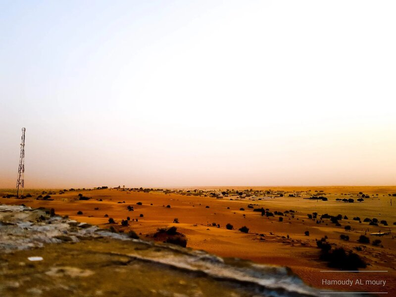
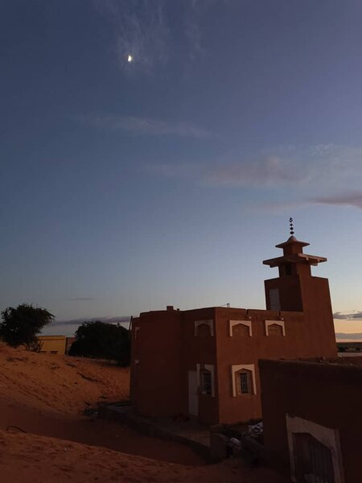

معرض الصور
استكشف التاريخ المرئي لمحظرتنا من خلال هذه المجموعة من الصور التي تلتقط لحظات لا تنسى، والمباني التاريخية، وتطور مؤسستنا. تضم المحظرة طلاباً من مختلف أنحاء موريتانيا ومن دول أخرى مثل السنغال، المغرب، الجزائر، ماليزيا، روسيا، اليمن، وليبيا.

